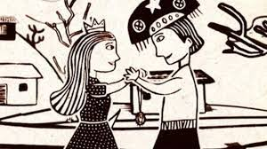

A música nordestina é muito rica e diversa, com influências que vão desde os ritmos africanos até os europeus. Algumas músicas que falam sobre o Nordeste do Brasil e sua cultura incluem:
Asa Branca - Luiz Gonzaga
Eu só quero um xodó - Dominguinhos
Vida de Viajante - Luiz Gonzaga
Sabiá - Luiz Gonzaga
Xote das Meninas - Luiz Gonzaga
Forró de Tóquio - Trio Nordestino
Olha pro Céu - Luiz Gonzaga
Baião - Luiz Gonzaga
Festa do Interior - Gal Costa
Severina Xique Xique - Genival Lacerda
Essas músicas são apenas algumas amostras da riqueza cultural da região Nordeste do Brasil e da influência da música nordestina na cultura brasileira como um todo